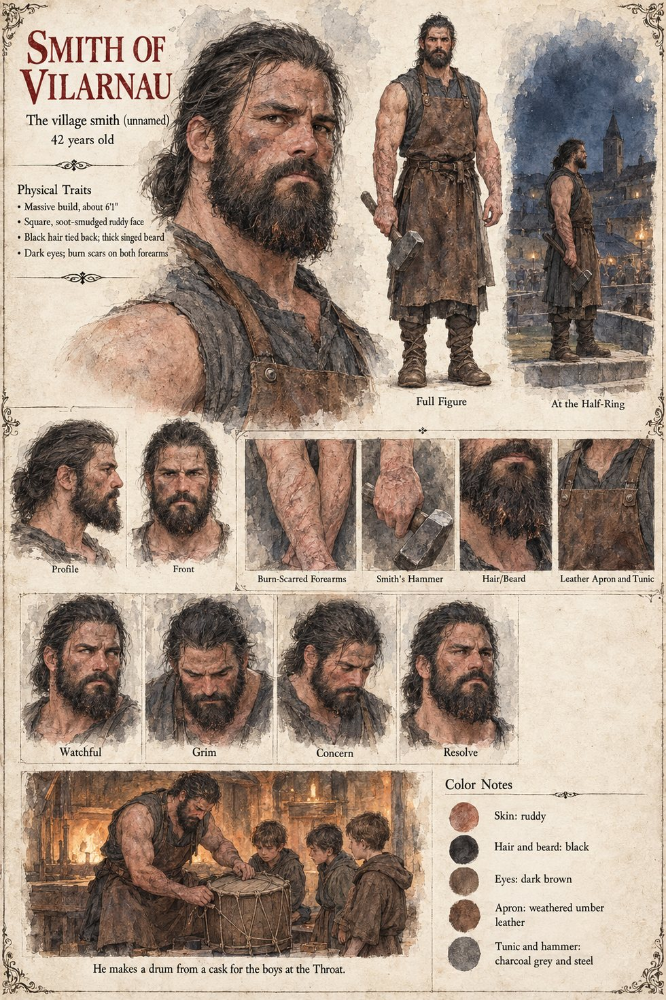

The Smith of Vilarnau
The village smith · unnamed · 42 years old by his sheet
The village comes out onto the moot-green at Vilarnau at full dark on the nineteenth of Garren with rushlights and crooks and, in the case of the smith, a hammer, and stands in a ragged half-ring forty paces from the oak, and nobody goes closer. It has been nine years since the last man came out of the stone, and he died. The old women of the church remember him in the tavern on the first of Havren: a thin small man with ink on his fingers who had lived eleven days in the smith's loft and died on the twelfth, of nothing in particular, apologizing. Case 2231's page for Kaneyoshi gives the same man three days and a burial on the third night; the two accounts are not reconciled. In the same room the smith offers his verdict on the Keeper of Sant-Sever, who has asked for nothing: a priest who asks for nothing, he says, “has a purpose that he is keeping to himself.”
At the Throat he makes a drum from a cask, and by the third morning of the digging the line of boys with the wooden harvest-rattles has been taught to keep time to it; when the swarm comes down on the gorge, a hundred drums behind the second rank, beaten by boys in a long line, keep the main flood from settling. His wife, the smith's wife, made the stranger sausages and was turned down. Case 2231 has the same man at the green with his hammer among the villagers, and has him not living to reach the ridge after Vilarnau burns, when his son, the Smith's Son, carries the hammer up the quarry road; this manuscript does not say what became of him. The sheet's forty-two years, massive six-foot-one frame, square soot-smudged face, black hair tied back, thick beard singed at the ends, dark eyes, burn-scarred forearms, leather apron and sleeveless tunic are its own.